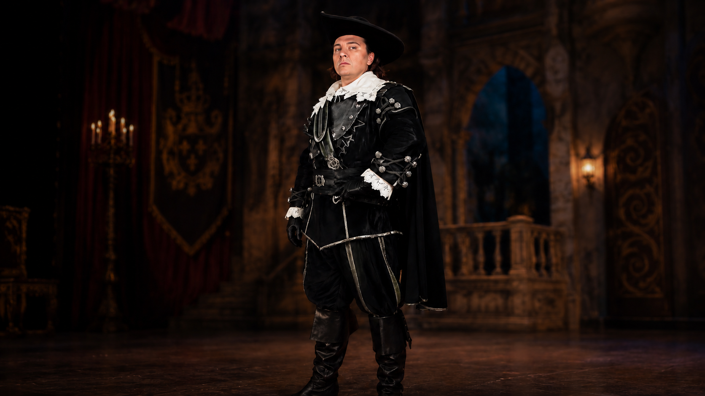
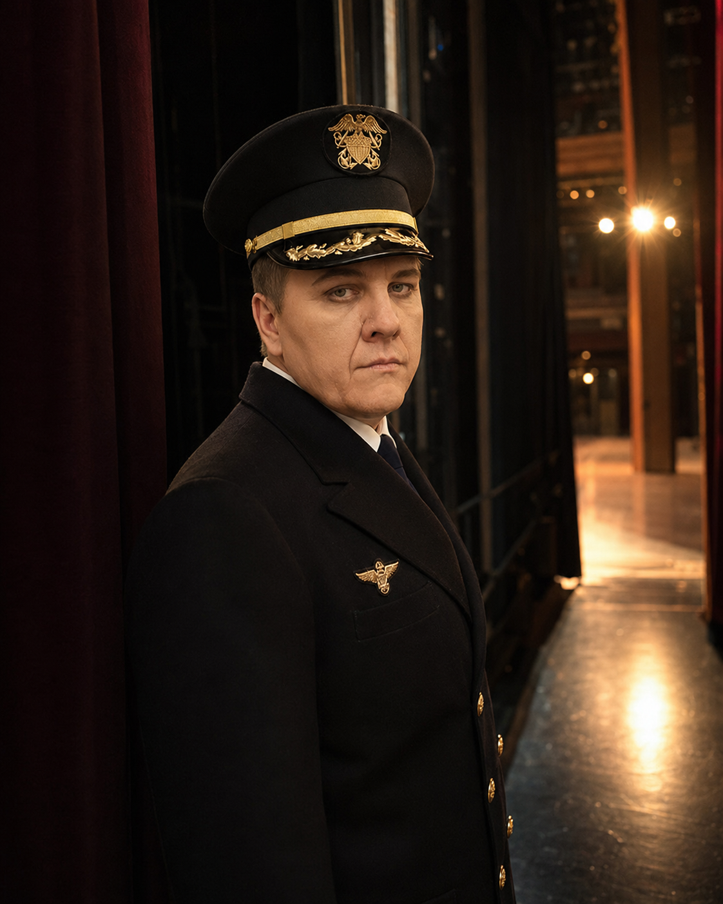

Опера
Верди, Чайковский, Пуччини, Римский-Корсаков.

Baritone · official portfolio
Оперная сцена, международные постановки, строгая классика и концертные программы с оркестром.
О себе
Максим Аниськин — баритон, солист Новосибирского театра оперы и балета и приглашённый солист Большого театра России.
В основе сайта — крупный визуальный портфель: роли, площадки, режиссёры, дирижёры, пресса и программа для агентского предложения.
Верди, Чайковский, Пуччини, Римский-Корсаков.
Большой театр, NOVAT, Met, Teatro Real, Opera Australia.
Концерты, гала, филармонические программы.
Ссылки на рецензии внутри карточек проектов.

Репертуар
Чайковский, Римский-Корсаков, Бородин, Рахманинов, Вайнберг. Крупные баритональные партии, драматический центр спектакля и русская вокальная школа.
Подробнее
Репертуар
Верди, Пуччини, Бизе, Моцарт, Беллини, Чилеа, Штраус. От итальянского драматического репертуара до французской и немецкой классики.
Подробнее
Репертуар
Романсы, арии, филармонические вечера и камерные программы. Формат для залов, фестивалей, агентских предложений и специальных концертов.
Подробнее
Репертуар
Классическая эстрада, песни с оркестром, концертные номера и специальные вечера в благородной оперной подаче.
ПодробнееПрограмма
Арии и сцены из русской классики: Чайковский, Римский-Корсаков, Бородин, Рахманинов. Программа для большого зала и симфонического состава.
ПодробнееПрограмма
Драматический баритональный блок: Риголетто, Набукко, Макбет, Жермон, Родриго, Яго и другие партии в концертном формате.
ПодробнееПрограмма
Итальянская линия: бельканто, гибкая кантилена, сценические номера и концертные фрагменты для камерного или оркестрового вечера.
ПодробнееПрограмма
Русские народные песни и стилизованные концертные номера с крупным вокальным дыханием, ясным текстом и оркестровой подачей.
ПодробнееПрограмма
Эстрадный концертный блок без снижения статуса: благородная сценическая подача, крупная форма и репертуар для широкой аудитории.
ПодробнееПрограмма
Отдельная программа по песням Муслима Магомаева: узнаваемый материал, концертный масштаб и вокальная культура академического артиста.
ПодробнееПроекты
NOVAT / Новосибирский театр оперы и балета · 2006-
Елецкий; Томский; Златогор; Князь Игорь; Онегин; Риголетто; Скарпиа; Жермон; Шарплес; Эскамильо / Моралес; Грязной; Родриго; Алеко; Тадеуш и др. Подробнее ↗Большой театр · 2010
Marcello / Марсель Подробнее ↗Teatro Real · 2011/12
Robert Подробнее ↗Большой театр · 2011
Grigory Gryaznoy / Григорий Грязной Подробнее ↗Пермский театр оперы и балета · 2011/12
Guglielmo / Гульельмо Подробнее ↗Пермский театр оперы и балета · 2012
Count Almaviva / граф Альмавива Подробнее ↗